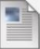

Assignment 5
Attached Files:
Homework8.png
(45.086 KB)
Step 1
- Make a page called Assignment5.html with the standard code template and upload to the Week-4 directory.
- Write the html that recreate the page shown in the attached pdf file
Step 2
- Edit your index.html in the root directory of your web account and add arelative link to your homework file.